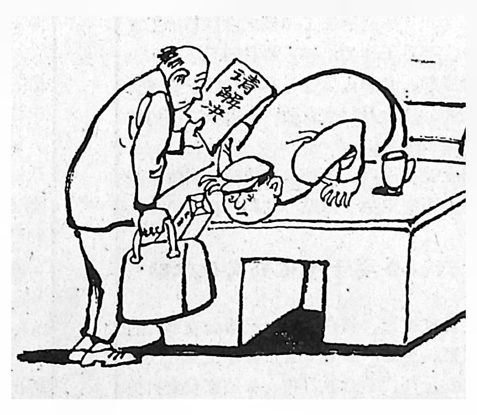

王春生画 《人事》1988年第1期（总第28期），第29页
机关碰壁记（诗配画）
Running into a Wall at the Office (poem drawing)
- Text in the drawing
- 请解决
Please resolve - Passage illustrated
二次进门笑嘻嘻，忙把香烟递上去。人家瞅见烟牌子，手刚伸出又缩回去。你在那里正纳闷，一旁有人在咕嘀：“要说这事全怪你，咋不买盒带嘴的！”
The second time you go in all smiles and hurry to hand over the cigarettes. He glances at the brand; his hand reaches out, then draws back. While you stand there puzzled, someone beside you mutters: “If you ask me, it's all your fault — why didn't you buy a pack with filter tips!”From the poem 机关碰壁记 (“Running into a Wall at the Office”) by Ma Liang, on the same page. 马良《机关碰壁记》（诗），同页
- Description
- A visitor with a briefcase, holding a paper headed “please resolve,” leans over a desk where the official lies slumped beside his tea mug, and slides a packet of cigarettes toward him.
- Note
- In the poem the petitioner fails the first time because he brought no cigarettes, and the second time because his brand has no filter: “it's all your fault — why didn't you buy the kind with the tip?”
- Artist
- Wang Chunsheng 王春生 (drawn)
- Published in
- 《人事》1988年第1期（总第28期）, p. 29
- Themes
- Bureaucratism · Gifts and banquets · Paperwork and documents · Story illustrations

Cite
Wang Chunsheng, “机关碰壁记（诗配画）” [Running into a Wall at the Office (poem drawing)], Renshi (Personnel) 《人事》, 1988, no. 1, p. 29.